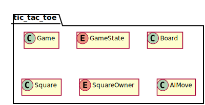
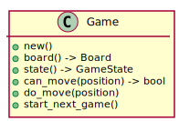
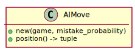

Public API¶
This section describes the public API of the library. The provided types and functions are used by other applications to create Tic Tac Toe games. The legend shown in Fig. 6 is used for the type diagrams in this section.

Fig. 6 Legend used for the type diagrams in this section.¶
An overview of the public types is shown in Fig. 7.

Fig. 7 Public modules, structures, and other types.¶
The library contains a single public module that holds the public types.
Struct Game¶
The Game structure is one of the central types provided by the crate. It contains the state machine logic and the underlying game board. Fig. 8 show the Game structure.

Fig. 8 The Game structure.¶
The Game structure uses a state machine to determine which player has the next move or when the game is over. The state diagram is shown in Fig. 9.
![hide empty description
[*] --> PlayerXMove
[*] --> PlayerOMove
PlayerXMove --> PlayerOMove
PlayerXMove --> PlayerXWin
PlayerXMove --> CatsGame
PlayerOMove --> PlayerXMove
PlayerOMove --> PlayerOWin
PlayerOMove --> CatsGame](../_images/plantuml-54833c3598e19d85d75d20dd988336c5557b179e.svg)
Fig. 9 State diagram of a Tic Tac Toe game.¶
When a new Game starts either player X or player O takes the first turn. The players alternate making their moves until one of the end game conditions is encountered. The player that did not have the first turn last game takes the first turn next game.
Member Details
- new
Creates a new Tic Tac Toe game.
- board
Gets the board associated with the game.
- state
Gets the current state of the game.
- can_move
Indicates if the square at the indicated position can be marked as owned. That is, if
can_move()returnstruethendo_move()is guaranteed to not panic.- do_move
Marks the indicated square as being owned by the current player. The state of the game is updated as a side effect of
do_move(). Panics if the indicated position is already owned if the game is over.- start_next_game
Starts
Trait Implementations
Debug
Clone (or Copy?)
Related Requirements

Struct AI Move¶
See Artificial Intelligence Algorithms for details on the algorithms.

Fig. 14 AIMove structure.¶
Related Requirements